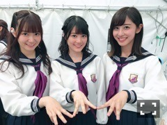
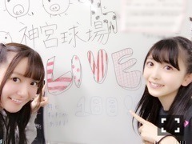

1日2日は
真夏の全国ツアー2017東京会場
でした！
雨が降らなかった！
今年の夏は何かが違うぜ！
久々のライブ、正直、
始まる前は怖くて。
ひとりぼっちで過ごす時間が長かったから
大勢の方の前に立つのが怖かった。
モバメで不安を吐露しては
皆さんがコメントで慰めて下さって
それ読んで私泣くっていう。
正直、まだ完調とは
言い難い状態でしたが
46人全員で同じ景色を見た夏、
特別な時間になりました。
頑張って良かったと思えました。
ステージに立てて幸せでした。

ひめしお♡♡♡
しーちゃんとはソウルメイトだと
勝手に思ってる。引かないで下さいね。
いや違うんですよ。
居心地が良いんですよ。
期別ライブということでしたけど
3期生パート2期生パートを見てて
未来を感じました。
加入してくれてありがとう、
仲間になってくれてありがとうって
偉そうかもしれないけれど思った！
1期生だけでは限界のある高みに
連れて行ってくれるのは
後輩たちの勢いだな～って。
乃木坂の2期生って立場、
三姉妹の次女である私自身の生き方と
重ねて見ちゃうところがあって。
うまく言えないけれど
2期生が抱える葛藤、複雑な立ち位置、
そういうのが少し分かる気がする。
だからこそ引っ張っていってほしいって
すごく期待しちゃう。
真ん中っ子パワー見せつけたれ！って。
蘭世と長々と語りました。
本番前に。うん。
1期生のみんなといると
すごくあたたかい雰囲気で落ち着く。
6年間も一緒にいる絆はやっぱり強いです。
みんなオトナになったね＾＾
サプライズで発表されましたが
アンダーアルバムの発売、驚きました。
私はアンダーライブ・アンダーユニット・
色んなスターティングメンバーとして
活動してきました。
どうやったら選抜になれるんだろうって
がむしゃらにやっていた瞬間が
私の青春でした。
(＊´・ω・＊)